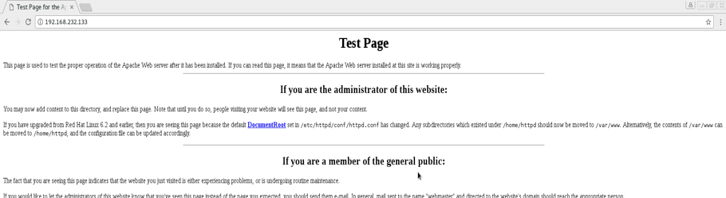

In order to be sure you get the most from our site, you first want to make sure that:
We highly recommend you use the pre-configured Kali Linux VM we provide to you as it guarantees you will have all the tools we introduce pre-installed.
If you need help with any or all of these requirements, relax. Finish reading this guide on getting started with the Cyber-Range and you should have everything you need to hit the ground running!
1.0 Installing your free Virtualization Software (VirtualBox)
Start by downloading VirtualBox for your respective platform at https://www.virtualbox.org/wiki/Downloads
Next, install the application using the documentation found at https://www.virtualbox.org/manual/ch02.html.
1.1 Install our pre-configured Kali machine
Go to the Google Drive: https://drive.google.com/drive/folders/1pDILnPkqMjkJegvNg69WfSlmXbk9XqD4?usp=sharing and download all the contents.
Next simply import the Kali VM by running VirtualBox and selecting ‘File > Import Appliance’, browse to the location of the Kali download, select the .ovf file, then click ‘Next’. Then, change the hardware configuration details to your preference or leave the default settings. Now simply select your new VM shown in the VirtualBox main menu and choose to start. For more detailed instructions visithttps://www.maketecheasier.com/convert-virtual-machines-vmware-virtualbox/
Log in to Kali with the credentials from the file, Passwords and More.txt, downloaded from the Gdrive link. Repeat this step to install any of our target VMs on VirtualBox to be attacked.
2.0 Establishing communication between your attack and target machine
To connect your attack and target machines to communicate directly, follow the instructions in: http://www.pc-freak.net/blog/create-local-network-virtual-machines-virtualbox-vm-add-local-lan-linux-virtual-machines/.
3.0 How to get the most out of the CyberRange
3.1 Trekthrough Tutorials
hands-on VMs(Virutal Machines), we have noticed that people are having the same few, but horribly frustrating problems:
That’s why the Cyber-Range was created. We attempt to solve these problems with hand-picked VMs and unique solution document we call trekthroughs, which are incredibly detailed walkthrough solutions focused on teaching important concepts and tools. The trekthroughs, and their corresponding VMs, are ordered. Each trekthrough assumes the user knows only what has been taught in the preceeding trekthroughs. This allows us to provide an evergrowing playlist of practice VMs with a self-ordering start-to-finish learning format and community-tested teaching documentation that is both incredibly detailed and non-repetative.
While more experienced Pen-Testers are free to jump to whichever VM they feel comfortable, it is important to remember that our trekthroughs are built in a layered fashion, assuming the user is familiar with all key terms and concepts introduced in the preceeding trekthroughs. For this reason it is recommended you start at VM1 even if you are familiar with most of the content. At the very least, it is recommend that users with intermediate or below skill level, read the trekthroughs until they are introduced to new material then procede to install and practice with the associated target VM.
3.2 Virtual Machine Practice Pool
Our VM pool operates like your traditional VM repository. It is non-linear and without detailed trekthroughs like the VMs in our tutorials. However the VMs in the practice pool offer our users a chance to practice what they have learned in tutorials on quality VMs with similar vulnerabilities without step by step solutions.
3.3 Keyword Searchbar
Our keyword searchbar cross-references your search with the hundreds of keywords created throughout the Trekthrough Tutorial. It great tool to help you revisit old teaching content or access links to educational sites and tool cheatsheets associated with a keyword.
That’s all you need to know for now!